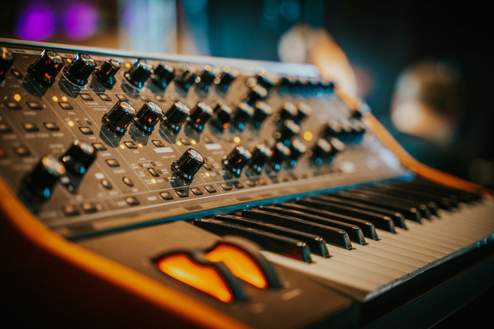

02 / Projects
Things
I make.
Science explained through sound and images. Research made accessible to peers. A rocket tested and revised. Music arranged, recorded, and mixed.

01Science media
Outreach · 2025–present
I turn topics such as time, nuclear fusion, and entropy into podcasts, videos, diagrams, and conversations.
On screen and in headphones.
The initiative has reached 500+ viewers and listeners and 80+ subscribers. Ten of my original music tracks were composed for science-media projects.
In a room together.
I designed and led three workshops for 20 Millbrook students, using visual models, demonstrations, and guided discussion to explore astrophysics topics.
02Peer research
Mentoring · 2026–present
A peer research initiative that helps students move from an interest in astrophysics to a question they can investigate.
I use scientific literature, public datasets, and evidence-based discussion to help students develop their work. Projects have explored solar physics, galaxy evolution, and gravitational waves.
- Question formation
- Data interpretation
- Visualization
- Uncertainty
- Presentation
Work that can be shared.
Participants produced five posters, reports, or presentations. I published research guides and student work online.
A chance to discuss it.
A showcase brought the work to an audience of approximately 30 people.
03Rocketry
Engineering · 2024–present
Working with a team to design, build, and test a 1.2-meter model rocket — and use each launch to inform the next design.
The engineering.
The project brings together mechanics, aerodynamics, avionics, and recovery-system testing. We entered the American Rocketry Challenge.
The revision.
Parachute redesign improved recovery success from 60% to 80%. The result came from designing, testing, and adjusting the recovery system.
04Music
Production · 2024–present
I compose and produce original music, from arrangement and recording through editing and mixing.
Listening again.
I use audience feedback to refine later compositions and the sound design of my science-media work.